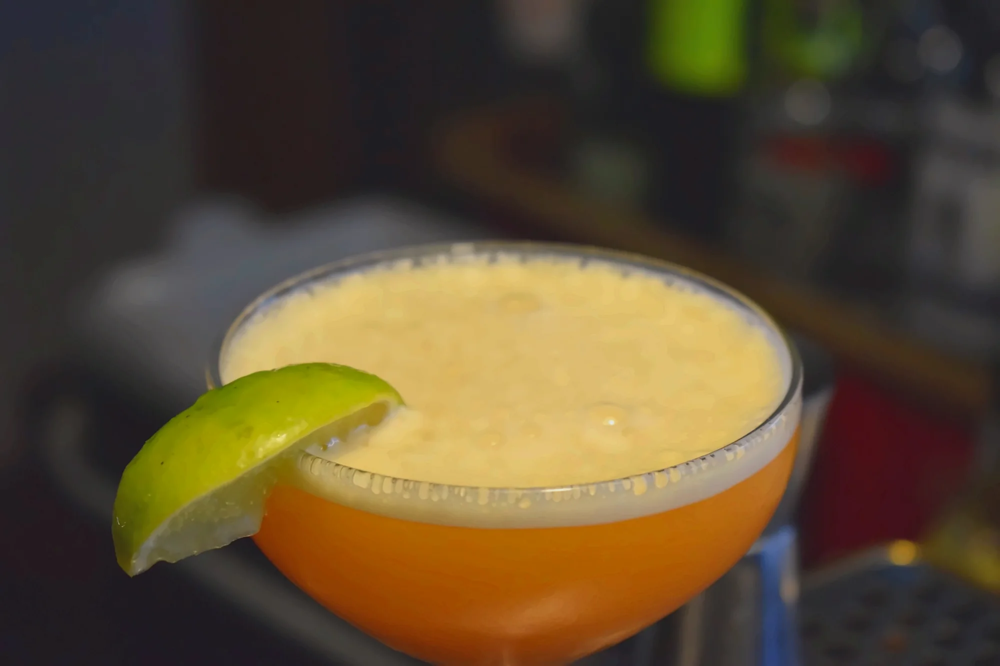

COFFEE · DRINKS · COCKTAILS
Από τον πρώτο καφέ
μέχρι το τελευταίο ποτό.
Καφέδες, ροφήματα, μπύρες, κρασιά και cocktails — όλα τα ποτά και οι τιμές σε ένα καθαρό menu.
Δες τον κατάλογο ↓
DRINKS / 202601
14 επιλογέςΚΑΦΕΔΕΣ
€2.50
Espresso διπλό
Cappuccino
Cappuccino διπλό
Freddo Espresso
Freddo Cappuccino
Freddo Crema
Φραπέ / Frappe
Nescafé
Ελληνικός μονός
Ελληνικός διπλός
Americano
Latte
Γαλλικός φίλτρου
02
10 επιλογέςΡΟΦΗΜΑΤΑ & ΧΥΜΟΙ
Σοκολάτα ζεστή / κρύα
Σοκολάτα με γεύσεις
Σοκολάτα λευκή
Χαμομήλι
Τσάι ζεστό
Freddoccino
Γρανίτες
Διάφορες γεύσεις
Milkshake
Πορτοκάλι
Ανάμεικτος με φρούτα εποχής
03
10 επιλογέςΑΝΑΨΥΚΤΙΚΑ
Coca-Cola / Zero 250ml
Fanta / Sprite 250ml
Ξινό νερό Φλώρινης 250ml
Ice Tea ροδάκινο
Ice Tea λεμόνι
Χυμοί Amita
Schweppes
Schweppes διάφορες γεύσεις
Νερό 0.50L
Νερό 1L
04
10 επιλογέςΜΠΥΡΕΣ
Άλφα βαρέλι 400ml
Corona 355ml
Corona Cero 0.0% 330ml
Bud 330ml
Kaiser 330ml
Carlsberg 330ml
Fischer 330ml
Heineken 330ml
Heineken Free 330ml
Φιξ Άνευ 330ml
05
10 επιλογέςCOCKTAILS
Virgin Cocktail
Mojito
Porn Star Martini
Margarita
Negroni
Mai Tai
Paloma
Zombie
Daiquiri
Cosmopolitan
06
3 επιλογέςSIGNATURE COCKTAILS
Cubanacan
Exotic, tropical & creamy — rum blend, pineapple, banana, strawberry, lime, vanilla
Godfather
Rich, citrus & spicy — whisky, dark rum, mandarin, cinnamon, lime
Xylino
Fresh & botanical — gin, vodka, cucumber, green apple, basil, lime
07
4 επιλογέςWHISKEY
Basic
Haig, Johnnie Walker Red, Famous Grouse, Dewars, Jameson
Premium
Johnnie Walker Black, Chivas, Dimple, Jameson Black Barrel
Φιάλη απλή
Φιάλη special
08
12 επιλογέςWINES
Τσακανίκα Μαλαγουζιά Ροδίτης — ποτήρι
Λευκό ξηρό
Κτήμα Μουσών 9 — ποτήρι
Sauvignon blanc, trebbiano, Ασύρτικο
La Mello λευκό — ποτήρι
Αμέθυστος λευκό — φιάλη
Τσακανίκα Cabernet Sauvignon–Syrah — ποτήρι
Ροζέ ξηρό
Γέφυρα Λίκος Cabernet Sauvignon, Merlot — ποτήρι
Ερυθρό ξηρό
Κτήμα Μουσών 9 Βοιωτία — ποτήρι
Κτήμα Μουσών 9 Βοιωτία — φιάλη
Τέσσερις Άγγελοι Merlot Syrah — ποτήρι
Ερυθρό ξηρό
Τέσσερις Άγγελοι Merlot Syrah — φιάλη
Prosecco — ποτήρι
Moscato d’Asti — ποτήρι
Δεν βρέθηκε κάτι.
Δοκιμάστε άλλη λέξη ή καθαρίστε την αναζήτηση.
READY?